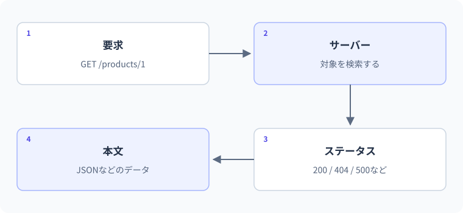

HttpClientでHTTPを扱う
HTTP要求と応答の構成。
図解：HTTP要求と応答の構成

要点
- HTTP成功とデータの妥当性を分ける
- HttpClientの寿命とキャンセルを考える
using var response = await client.GetAsync(url, token);概念・構文
HTTPでは、接続できたこと・成功ステータスだったこと・本文が期待したJSONだったことは別です。HttpClientの寿命と応答の寿命を分け、通信せず再現できる偽ハンドラーからエラー処理を学びます。
HTTPは成功以外も返す
GetAsyncで応答を受け取り、ステータスコードを確認します。EnsureSuccessStatusCodeは成功範囲外なら例外にしますが、404を「対象なし」と通常分岐にしたい場合は明示的に扱います。JSONとして読めても、必要な項目があるか検証することは別です。タイムアウトやユーザーキャンセルも考慮してCancellationTokenを渡します。
HttpClientを毎回作り捨てない
実際の通信でリクエストごとにHttpClientをnewして破棄すると、接続管理の問題が起こり得ます。長寿命クライアントと接続更新設定、またはIHttpClientFactoryなどを用途に応じて使います。ここでは通信の扱いを確認するため、HTTPハンドラーを差し替えた短い1回限りの例を使います。
外部APIに依存せず学ぶ
下のDemoHandlerは固定JSONをHTTP応答として返すテスト用の実装です。ネットワーク接続は発生しません。JSONの読み取りやステータス確認のC#コードは実際に実行されますが、実サーバーの疎通テストとは区別します。実通信へ進むときは標準ハンドラーを使い、接続先と認証情報を適切に設定します。
通信・ステータス・本文の三段階
GetAsyncが応答を返しても、ステータスが404や500であることがあります。ネットワークへ接続できない失敗と、サーバーがエラー応答を返した状態は別です。業務上よくある404は分岐で扱い、想定しない非成功状態はEnsureSuccessStatusCodeなどで検知する設計ができます。
200でも本文が期待するJSONでない、JSONとして読めても必須値がない場合があります。ステータス確認、本文の読み取り・逆シリアル化、業務データの検証という順番を崩さないようにします。失敗をすべて空Listへ置き換えると「本当に0件だった」と区別できなくなります。
HttpClientと応答の寿命を分ける
HttpClientは内部の接続を再利用するため、要求のたびに大量にnewして破棄する使い方を避けます。長寿命のクライアントとPooledConnectionLifetimeを調整する方式や、IHttpClientFactoryで管理する方式が公式に案内されています。適切な選択はアプリの寿命やDNS更新、Cookieの扱いなどにも依存します。
HttpResponseMessageは各応答に対応するため、usingで本文を使い終えたら破棄する設計が基本です。この単元のコンソール例でusing var clientとするのは、一つの短命アプリ全体で一つのクライアントを使うためです。サーバーの各要求内で毎回作り直す例へ機械的にコピーしないでください。
キャンセル・タイムアウト・再試行
GetAsyncや本文読み取りへCancellationTokenを渡すと、利用者の中止要求や上位操作の停止を伝えられます。タイムアウトもOperationCanceledException系の形で観測される場合があるため、呼び出し元のトークンが要求されたかなどを確認して原因を分けます。HttpRequestExceptionは接続失敗や成功ステータス検査など、発生地点を含めて読む必要があります。
失敗したらすべて自動再試行する設計は危険です。POSTの作成処理では、サーバー側が作成済みなのに応答だけ失われた可能性があります。再試行の安全性は操作の冪等性、冪等性キー、接続先の規約などによります。認証情報や本文全体をログへ出して原因調査する方法も、秘密情報の漏えいにつながります。
偽ハンドラーで通信境界を制御する
HttpClientはHttpMessageHandlerへ要求を渡します。学習用にSendAsyncを実装したハンドラーを与えると、実際の外部サービスへ接続せず、200、404、不正JSON、キャンセルなどを再現できます。テストごとに同じ入力と応答を用意でき、インターネット障害でテストが揺れにくくなります。
これは実際のDNS、TLS、ネットワーク経路、相手サーバーまで検証するテストではありません。HTTPクライアント側の処理を切り出して確認していると区別します。実通信の確認は安全なテスト環境で別に行い、APIキーや実ユーザーデータをサンプルへ埋め込まないでください。
C#仕様の整理
| 観点 | C#での扱い | 読み方・設計上の要点 |
|---|---|---|
| クライアント | System.Net.Http.HttpClient | 接続管理と寿命を理解 |
| 非同期 | GetAsync/SendAsync | tokenとawaitで完了を管理 |
| 本文変換 | System.Text.Json/Json拡張 | HTTP成功とデータ有効性を分ける |
| テストダブル | HttpMessageHandlerの差し替え | 実ネットワークの検証とは別 |
文法・実例・処理順
using System.Net;
using System.Net.Http.Json;
using var client = new HttpClient(new DemoHandler());
using var response = await client.GetAsync("https://example.invalid/score");
response.EnsureSuccessStatusCode();
var score = await response.Content.ReadFromJsonAsync<Score>()
?? throw new InvalidOperationException("応答が空です");
Console.WriteLine(score.Value);
public record Score(int Value);
public class DemoHandler : HttpMessageHandler
{
protected override Task<HttpResponseMessage> SendAsync(HttpRequestMessage request, CancellationToken token)
{
token.ThrowIfCancellationRequested();
return Task.FromResult(new HttpResponseMessage(HttpStatusCode.OK)
{
Content = JsonContent.Create(new Score(80))
});
}
}想定出力
処理順
- HttpClientが差し替えたハンドラーへリクエストを渡す。
- ハンドラーが200とJSONを返す。実ネットワークは使わない。
- 応答コードを確認し、Scoreへ読み取って80を表示する。
値・状態の変化を追う
HTTP成功後にJSONと必須値を確認する
using System.Net;
using System.Text.Json;
using var client = new HttpClient(new DemoHandler());
using var response = await client.GetAsync("https://example.invalid/score");
response.EnsureSuccessStatusCode();
string body = await response.Content.ReadAsStringAsync();
var score = JsonSerializer.Deserialize<Score>(body);
if (score is null || score.Value is < 0 or > 100) throw new InvalidDataException("得点が不正");
Console.WriteLine($"HTTP: {(int)response.StatusCode}");
Console.WriteLine($"得点: {score.Value}");
public record Score(int Value);
public class DemoHandler : HttpMessageHandler
{
protected override Task<HttpResponseMessage> SendAsync(HttpRequestMessage request, CancellationToken token)
{
token.ThrowIfCancellationRequested();
return Task.FromResult(new HttpResponseMessage(HttpStatusCode.OK)
{ Content = new StringContent("{\"Value\":80}", System.Text.Encoding.UTF8, "application/json") });
}
}出力
| 段階 | 値・状態 | 読み解き |
|---|---|---|
| GetAsync | 偽ハンドラーへ要求 | 外部接続なし |
| EnsureSuccessStatusCode | 200を確認 | HTTPの非成功を先に扱う |
| 本文→Score | JSONを指定型へ変換 | HTTP成功だけでは省略できない |
| 範囲検証 | 0〜100 | データ契約も確認 |
| using終了 | 応答と今回のクライアントを破棄 | 本番のクライアント寿命とは使い方を区別 |
よくある間違いと修正
404本文を正常JSONとして処理する
修正箇所: 応答を受け取った直後のステータス判定
修正前
using var response = await client.GetAsync("https://example.invalid/item");
string body = await response.Content.ReadAsStringAsync();
// ステータスを見ずに正常なDTOへ変換してしまう修正後
using System.Net;
using var client = new HttpClient(new MissingHandler());
using var response = await client.GetAsync("https://example.invalid/item");
if (response.StatusCode == HttpStatusCode.NotFound)
{
Console.WriteLine("見つかりません");
return;
}
response.EnsureSuccessStatusCode();
Console.WriteLine(await response.Content.ReadAsStringAsync());
public class MissingHandler : HttpMessageHandler
{
protected override Task<HttpResponseMessage> SendAsync(HttpRequestMessage request, CancellationToken token)
{
token.ThrowIfCancellationRequested();
return Task.FromResult(new HttpResponseMessage(HttpStatusCode.NotFound));
}
}修正後の確認
- 404→見つかりません
- 500→成功検査で失敗
- 200→本文処理へ進む
実例：HTTP応答の処理を通信なしで確かめる
HttpResponseMessageを直接作り、404の分岐を確認します。実際の外部サーバーへはアクセスしません。
using System.Net;
using System.Net.Http;
using var response = new HttpResponseMessage(HttpStatusCode.NotFound);
if (response.IsSuccessStatusCode)
Console.WriteLine("取得成功");
else if (response.StatusCode == HttpStatusCode.NotFound)
Console.WriteLine("対象が見つかりません");
else
Console.WriteLine($"HTTPエラー: {(int)response.StatusCode}");想定出力
対象が見つかりません処理と値の変化
- HttpResponseMessage受け取る応答と同じ型を手元で生成する
- IsSuccessStatusCode2xxかどうかを確認する
- 404の分岐不存在をほかのエラーと分ける
NotFoundをOKへ変えると「取得成功」になります。この例は通信時間やCORSを検証するものではありません。
基礎・標準・応用演習
C#実行環境：.NET 10 SDK
基礎演習
例のハンドラーが404を返す版を書き、呼び出し側で「見つかりません」と表示してください。ネットワークは使いません。
開始コード
using System.Net;
// 404用のハンドラーと分岐を定義する。入力例・前提条件
偽ハンドラーが404を返す。外部ネットワークは使わない。
考え方のヒント
HttpResponseMessageのStatusCodeを確認して不在へ分岐する。
解答例と確認ポイント
using System.Net;
using var client = new HttpClient(new MissingHandler());
using var response = await client.GetAsync("https://example.invalid/item");
if (response.StatusCode == HttpStatusCode.NotFound)
Console.WriteLine("見つかりません");
else
response.EnsureSuccessStatusCode();
public class MissingHandler : HttpMessageHandler
{
protected override Task<HttpResponseMessage> SendAsync(HttpRequestMessage request, CancellationToken token)
{
token.ThrowIfCancellationRequested();
return Task.FromResult(new HttpResponseMessage(HttpStatusCode.NotFound));
}
}| 解答で確認する条件 | 確認方法 |
|---|---|
| 見つかりませんと表示される。 | コードと想定結果を照合 |
| HTTPの404を通常分岐として扱う。 | コードと想定結果を照合 |
処理と結果の読み解き
HTTP応答を受け取れたことと成功したことは別。404なら正常DTOへ変換せず、見つかりませんを表示する。
よくある別解と選び方
不在を戻り値で表すラッパーを用意するのは発展。ここではStatusCodeによる分岐を直接確認する。
よくある間違いと確認箇所
GetAsyncが404だけで必ず例外を投げると思わない。EnsureSuccessStatusCodeを呼ぶかどうかで扱いも変わる。
実務例：相手サービスの不在や失敗を、通信例外やJSON変換の問題から分離する。
標準：二つのHTTPステータスを区別する
同じ偽ハンドラーでパス/okなら200、その他なら503を返し、応答コードとIsSuccessStatusCodeを表示します。
- RequestUri.AbsolutePathを読む
- 応答ごとにusingを使う
- 503もHTTP応答自体は得られる
開始コード
// 標準：二つのHTTPステータスを区別する
// 課題とテストケースを読んで、自分で実装してください。
入力例・前提条件
/okへは200、それ以外へは503を返す偽応答。
考え方のヒント
要求のRequestUriからパスを読み、返すステータスを切り替える。
解答例と確認ポイント
using System.Net;
using var client = new HttpClient(new StatusHandler());
foreach (string path in new[] { "ok", "fail" })
{
using var response = await client.GetAsync("https://example.invalid/" + path);
Console.WriteLine($"{(int)response.StatusCode}: {response.IsSuccessStatusCode}");
}
public class StatusHandler : HttpMessageHandler
{
protected override Task<HttpResponseMessage> SendAsync(HttpRequestMessage request, CancellationToken token)
{
token.ThrowIfCancellationRequested();
var code = request.RequestUri?.AbsolutePath == "/ok" ? HttpStatusCode.OK : HttpStatusCode.ServiceUnavailable;
return Task.FromResult(new HttpResponseMessage(code));
}
}想定出力
- 二要求で一つのHttpClientを再利用する。
- 非成功コードでも応答を取得でき、アプリ側で方針を決める。
- IsSuccessStatusCodeはステータスの成功範囲を見るだけで、本文の正しさまでは保証しない。
| 入力 / 条件 | 期待結果 |
|---|---|
| /ok | 200,True |
| /fail | 503,False |
| /other | 503,False |
処理と結果の読み解き
200ではIsSuccessStatusCodeがtrue、503ではfalse。プロパティは本文の妥当性ではなく、HTTPコードの成功範囲を表す。
よくある別解と選び方
テストケースごとに異なる固定ハンドラーを作る方法もある。ここでは同じ部品の入力と応答を対応付ける。
よくある間違いと確認箇所
200ならJSONの項目も正しいと考えない。ステータス・形式・業務値は別々に確認する。
実務例：異常応答を再現できる偽の通信部品により、相手の障害を待たず検査できる。
応用：200でもJSONが不正なら失敗する
200を返す偽ハンドラーの本文をnot-jsonにし、JsonExceptionを捕捉して「本文形式が不正」と表示してください。
- HTTP成功検査の後にJSON変換
- 通信失敗と本文失敗を分ける
- 例外メッセージ全文を外部へ返さない
開始コード
// 応用：200でもJSONが不正なら失敗する
// 課題とテストケースを読んで、自分で実装してください。
入力例・前提条件
200の本文がnot-json。ステータス上は成功だが本文が不正。
考え方のヒント
ReadFromJsonAsyncをawaitする範囲でJsonExceptionを扱う。
解答例と確認ポイント
using System.Net;
using System.Text.Json;
using var client = new HttpClient(new BrokenBodyHandler());
using var response = await client.GetAsync("https://example.invalid/item");
response.EnsureSuccessStatusCode();
try
{
_ = JsonSerializer.Deserialize<Item>(await response.Content.ReadAsStringAsync());
}
catch (JsonException)
{
Console.WriteLine("本文形式が不正");
}
public record Item(string Name);
public class BrokenBodyHandler : HttpMessageHandler
{
protected override Task<HttpResponseMessage> SendAsync(HttpRequestMessage request, CancellationToken token)
{
token.ThrowIfCancellationRequested();
return Task.FromResult(new HttpResponseMessage(HttpStatusCode.OK) { Content = new StringContent("not-json") });
}
}想定出力
- ステータス200の確認と本文の構文検査は別に成功・失敗する。
- この課題はJsonExceptionだけを対象にしており、すべての障害を同じメッセージへまとめていない。
- JSON nullや必須値の欠損は構文エラーとは限らないため、成功後のデータ検証も別に必要になる。
| 入力 / 条件 | 期待結果 |
|---|---|
| not-json | 本文形式が不正 |
| 正しいオブジェクトJSON | この例では表示なし |
| JSON null | 構文エラーではない。別途null検証が必要 |
処理と結果の読み解き
200の確認を通ってもJSON構文として読めず例外になる。呼び出し側は本文形式が不正と表示し、正常データとして使わない。
よくある別解と選び方
まず文字列として読んでJsonSerializerへ渡す構成でも検証できる。どの段階で失敗したかを区別する。
よくある間違いと確認箇所
全てを見つかりませんと表示すると、相手が不在なのか本文が壊れているのかが分からない。
実務例：外部連携は成功コードだけで信用せず、形式と必要な項目まで検証する。
確認問題
理解チェックと公式資料
- 通信とHTTPとJSONの失敗を分けられる
- クライアントと応答の寿命を区別できる
- 安易なPOST再試行を避けられる
- 偽通信と実通信の検証範囲を説明できる
公式一次情報
公式資料
確認日：2026年9月14日。本文の理解を補うための資料です。学習対象は.NET 10 / C# 14です。パッチ番号は固定しません。